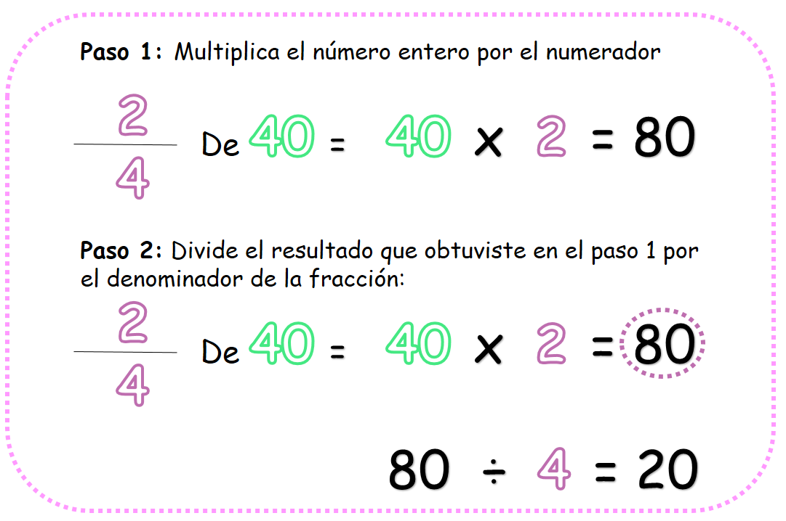
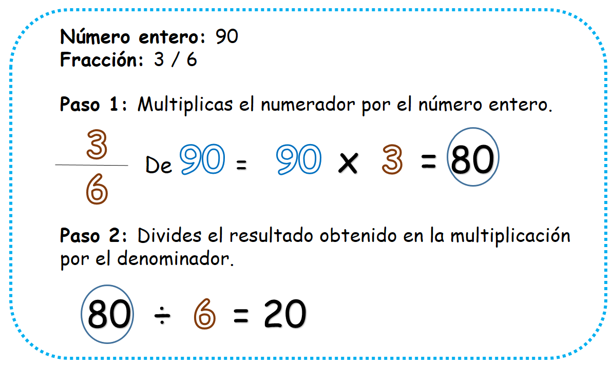
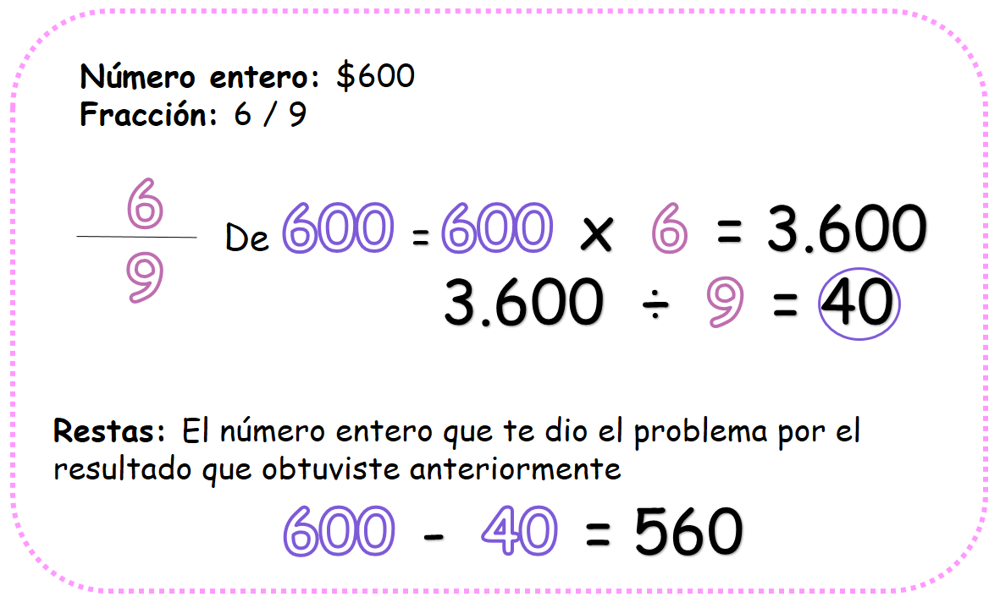

Fracción de un número
En este capítulo vamos a calcular la fracción de un número
¿Qué es la fracción de un número y para qué nos sirve?
Para comprender lo qué es la fracción de un número vamos a recordar la diferencia entre un número entero y una fracción:
La fracción me representa una parte de una unidad
El número entero es una unidad en sí mismo.
Cuando te piden que calcules la fracción de un número te están pidiendo que calcules una parte de ese número que es en sí mismo una unidad.
Saber realizar este procedimiento te puede ayudar en situaciones como:
- En el grado 4° de nuestro colegio hay 40 estudiantes, cuatro quintos de los estudiantes participan del equipo de microfútbol ¿Cuántos estudiantes practican microfútbol en nuestro colegio?
- Tomás ha comprado una caja de chocolates que trae 60 piezas, Tres cuartos son chocolates blancos. ¿Cuántos chocolates blancos tiene la caja?
Para hallar cuánto es la fracción de un número solo tendrás que usar dos operaciones: la multiplicación y la división.
- ¿Qué vamos a aprender?
- ¿Cómo calcular la fracción de un número?
- ¿Cómo resolver situaciones problemas con la fracción de un número?
(1)¿Cómo calcular la fracción de un número?
Este procedimiento es muy sencillo, aquí solo tendrás que usar dos operaciones: la multiplicación y la división. Observa los siguientes pasos teniendo en cuenta la siguiente pregunta:
Para hallar cuánto es dos cuartos de 40 debemos seguir estos pasos:

¡Listo!,
¿Has visto qué sencillo es? solo tienes que usar dos operaciones básicas.
(2)¿Cómo resolver situaciones problema con la fracción de un número?
Para resolver situaciones problema con la fracción de un número, debemos fijarnos muy bien en la pregunta y los datos que nos ofrece el problema. Hay muchos tipos de problema que se pueden resolver con la fracción de un número, aquí te mostraremos solo dos.
A. Primer tipo de problema:
Cuando tienes situaciones problema en las cuales te piden que halles cuánto es la fracción de un número, solo debes hacer lo siguiente:
- Identifica el número entero
- Identifica la fracción
- Aplica los pasos que aprendimos en la primera parte de este post.
Observa:
Para resolver el problema de Henry, solo tenemos que seguir los pasos anteriores.
Observa:
Listo, Henry tiene 20 autos modernos dentro de su colección de autos.
B. Segundo tipo de problema:
Cuando tienes situaciones problema en las cuales se te pide que calcules cuánto queda de una unidad luego de haber tomado una parte o de haber gastado una parte de esa unidad, debemos hacer los siguiente:
- Identificar el número entero
- Identificar la fracción
- Realizar los dos pasos aprendidos en la primera parte de este post
- Resta el resultado que obtuviste con el número entero que te brindo el problema.
Observa:
Para resolver el problema de Ana solo tenemos que seguir los pasos anteriores.
Observa:
Listo, Ana tiene ahora $560. Así de fácil es resolver este tipo de problema, solo tienes que señalar bien los datos que te dan y aplicar las tres operaciones: multiplicación, división y resta.
Material extra para trabajar el tema de fracción de un número:
En el siguiente enlace podrás descargar un pdf con una actividad divertida sobre la fracción de un número creada por Actiludis.com.
Vídeos orientativos:
En el siguiente vídeo “Obtener la fracción de una cantidad” de Unprofesor.com encontrarás una explicación sencilla sobre cómo hallar la fracción de un número.
En este vídeo “5° primaria: La fracción de un número” de matecitos.com podrás tener una explicación clara e ilustrativa sobre el tema que estamos viendo.